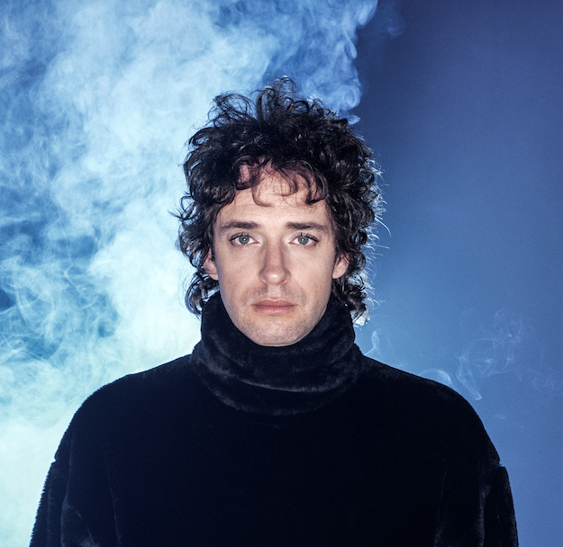

Gustavo Cerati fue un músico argentino, cantante, guitarrista, compositor, productor y arreglista. Fue líder de la banda Soda Stereo, conocida como una importante banda de rock pop en la Argentina y América Latina. A pesar de que se los conocía como los “Beatles” argentinos, se separaron en el año 1977, por lo que inició su carrera de solista. Empezó a explorar distintos rumbos como la música electrónica junto a Flavio Etcheo.
El conocido artista nació un 11 de agosto en el año 1959, en la ciudad de Buenos Aires, dentro de una familia de clase media. Su padre era contador en la empresa petrolera ESSO. Allí conoció a su madre, que era dactilógrafa. Juntos tuvieron tres hijos (Gustavo, Laura y Estela).
Al principio, era fanático de los cómics y el dibujo. Pero su interés musical empezó a desarrollarse cuando a sus 9 años le regalaron su primera guitarra.
En el año 1971, creó su primera banda, llamada Koala, junto con amigos de su barrio Villa Urquiza. Tiempo más tarde, conoció a Héctor Bosio y Charly Alberti, quienes se juntaron formando el trío Los Estereotipos, que luego terminó siendo Soda Stereo.
Proximamente, en el 87, se casaría con la diseñadora Belén Edwars, con quien solo mantuvo dos años de relación. Años más tarde, conoció a una modelo chilena, Cecilia Amenábar, durante una conferencia de prensa, con la que se presentó junto a su banda. Allí, se enamoró inmediatamente de ella, por lo que pronto comenzaron una relación llena de amor y pasión. La pareja tuvo dos hijos: Benito, quien siguió los pasos de su padre, y Lisa, que también optó por el arte, aunque detrás de cámaras.A pesar de este gran amor, en el año 2002 se separaron, y ella continúo con su vida, trabajando en producción y dirección de videos musicales.
Gustavo tuvo muchos más romances y vínculos, como la modelo Deborah del Corral, la actriz Leonora Balcarce, y su último amor, la joven modelo Chloé Bello.
En el año 1982, nace la banda Soda Stereo, que rápidamente causó furor en la escena de rock y pop local. Tuvieron un total de 7 álbumes de estudio: tales como Nada Personal, Signos, entre otros.
Sin separarse de la banda, inició su carrera como solista. Su primer disco fue Amor Amarillo, inspirado en su esposa, la vida en Chile y su hijo, Benito. A su vez, Cecilia lo acompañó en este proyecto, ya que fue directora de algunos de sus videos, como Amor Amarillo y Pulsar.
En el 97, Soda Stereo se separa. La noticia causó mucha tristeza entre sus fanáticos, aunque el trío, a pesar de estar pleno de giras y producciones, decidieron ponerle un punto final a la banda, cerrando el ciclo con un asombroso show en el estadio River Plate.
Luego de esto, Gustavo se enfocó en su carrera como solista, lanzando varios álbumes como Bocanada, Siempre es Hoy, entre otros. A su vez, ganó un premio Grammy gracias a su famosa canción "Crimen". Por último, publicó su última producción, llamada Fuerza Natural, antes de sufrir un accidente cerebrovascular, que lo dejó en coma por cuatro años, hasta su fallecimiento un 4 de septiembre del año 2014.

Resumen de su discografía solista
El fenómeno de "Me Verás Volver" (2007)
Tras una década de silencio y con sus integrantes enfocados en proyectos individuales, en junio de 2007 se anunció oficialmente el regreso de Soda Stereo. Bajo el lema "Me Verás Volver" —una referencia a la letra de su emblemática canción "En la ciudad de la furia"—, Gustavo Cerati, Zeta Bosio y Charly Alberti se reunieron para lo que originalmente sería una serie limitada de conciertos. Sin embargo, la demanda de entradas fue tan abrumadora que la gira se transformó en un fenómeno social y cultural sin precedentes en la historia del rock en español.
La gira comenzó en octubre de 2007 en el Estadio Monumental de Buenos Aires. En total, el trío realizó 22 conciertos en 13 ciudades de América, incluyendo paradas en Chile, Colombia, Ecuador, México, Panamá, Perú, Estados Unidos y Venezuela. La magnitud de la producción fue comparable a los estándares de las bandas más grandes del mundo, contando con un diseño de escenario y luces de vanguardia que potenciaban la energía de sus clásicos.
Uno de los hitos más memorables de este regreso ocurrió en su ciudad natal: Soda Stereo logró llenar seis veces el Estadio de River Plate, vendiendo más de 300.000 entradas. Con este logro, superaron el récord de cinco presentaciones que ostentaba la banda británica The Rolling Stones en Argentina hasta ese momento. Se estima que, al finalizar la gira, más de un millón de personas habían presenciado el reencuentro.
Este retorno no solo fue un éxito comercial y de asistencia, sino que permitió que una nueva generación de fanáticos viera a la banda en vivo por primera vez. Para Gustavo, esta gira significó un reencuentro con su pasado y con sus compañeros de ruta, cerrando el ciclo de Soda Stereo en el punto más alto de su gloria antes de retomar su camino solista definitivo con el álbum "Fuerza Natural".
Para visitar otras páginas: